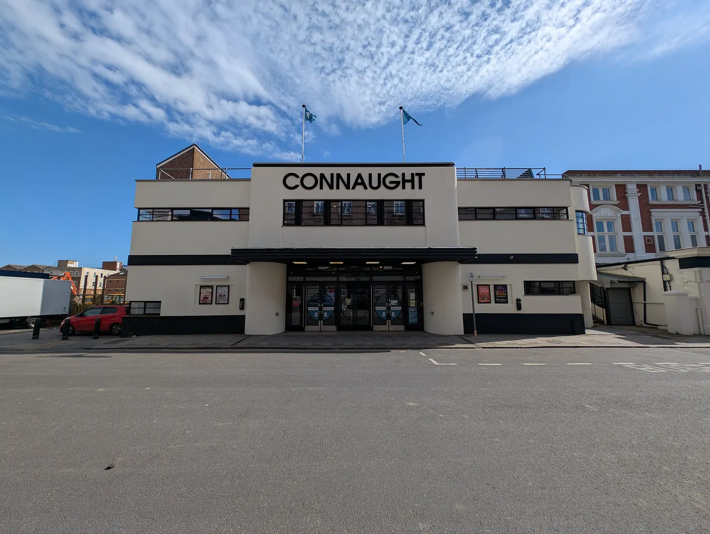
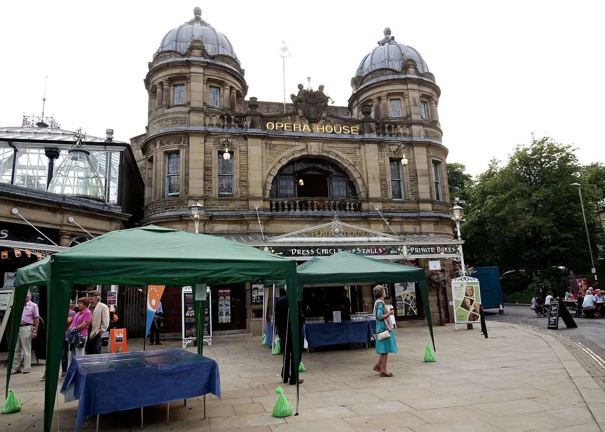
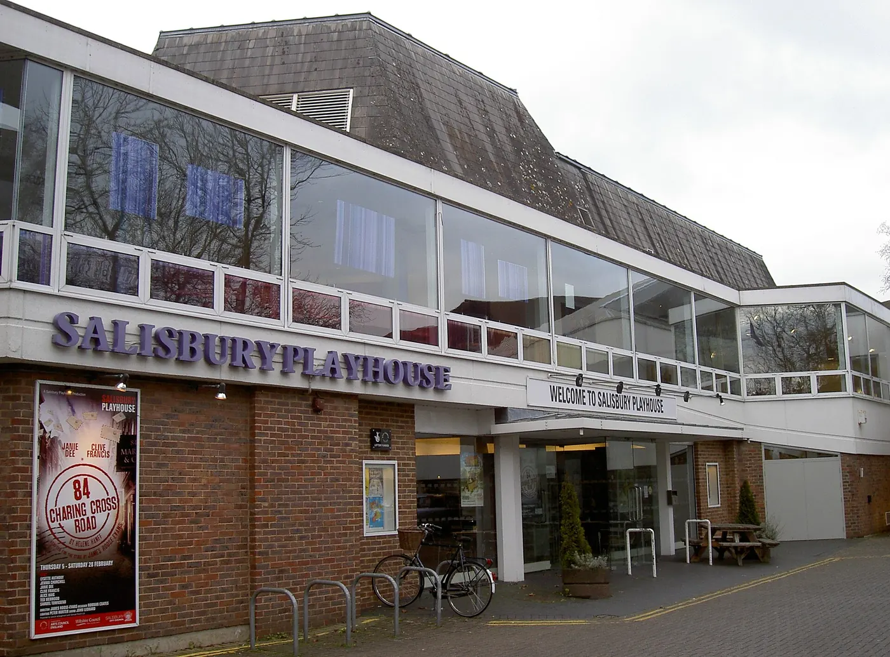
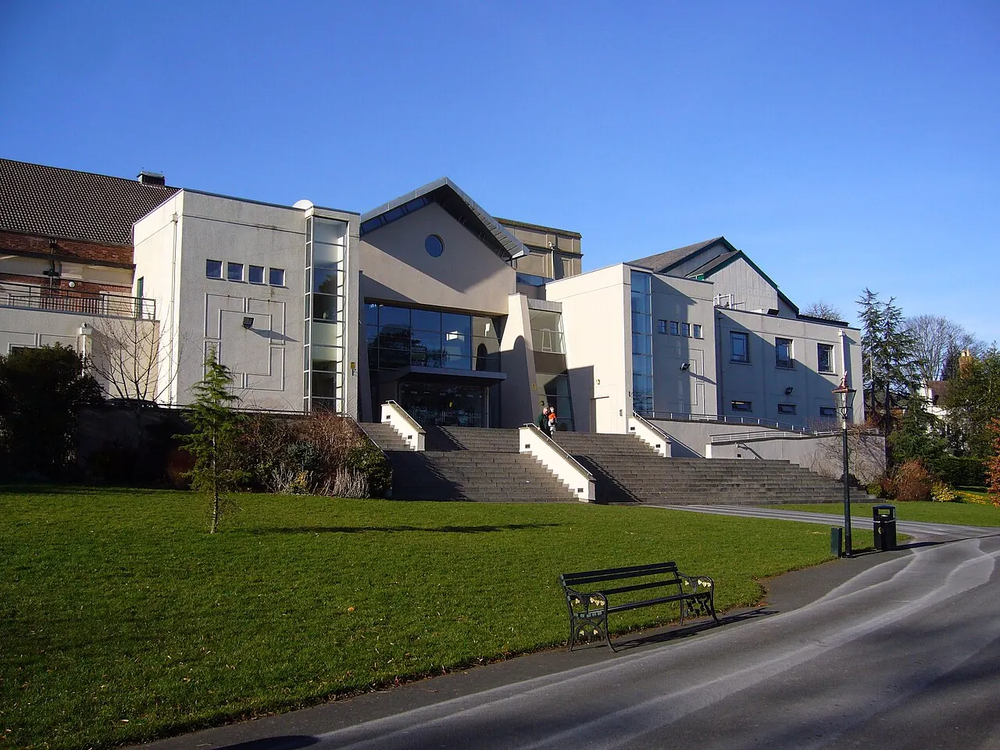
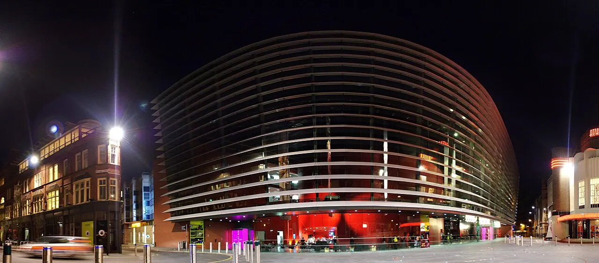
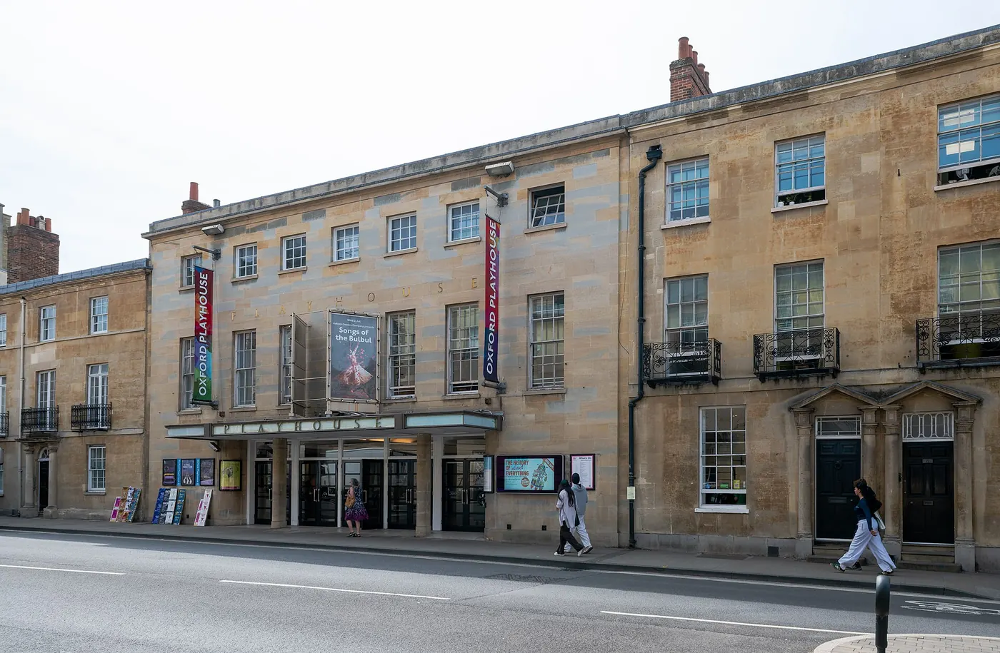
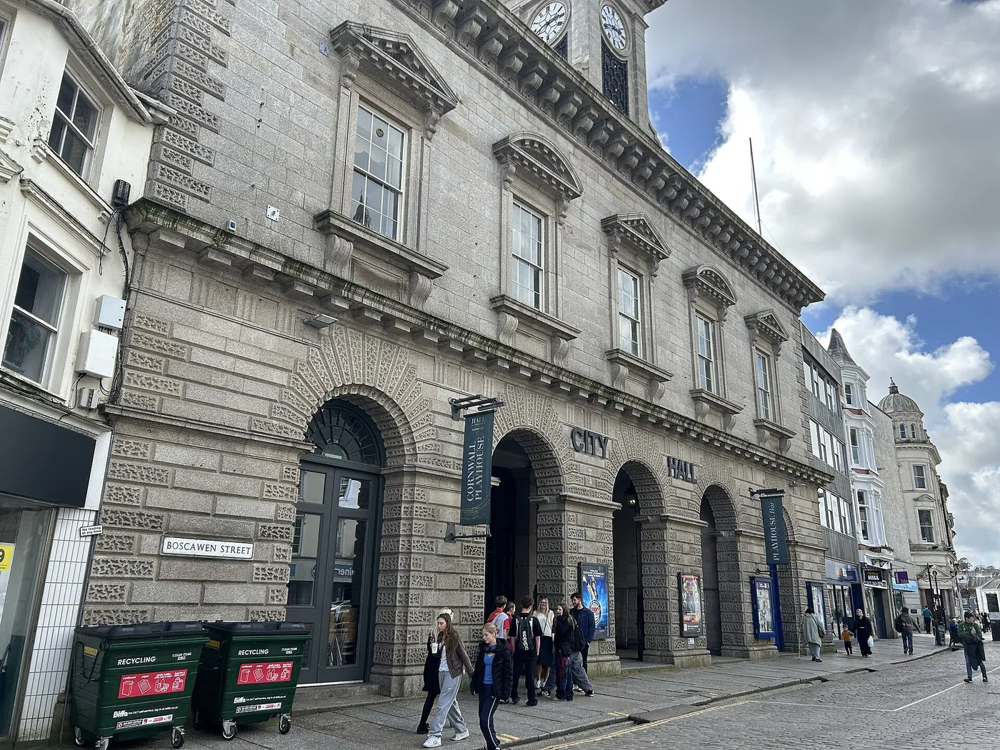
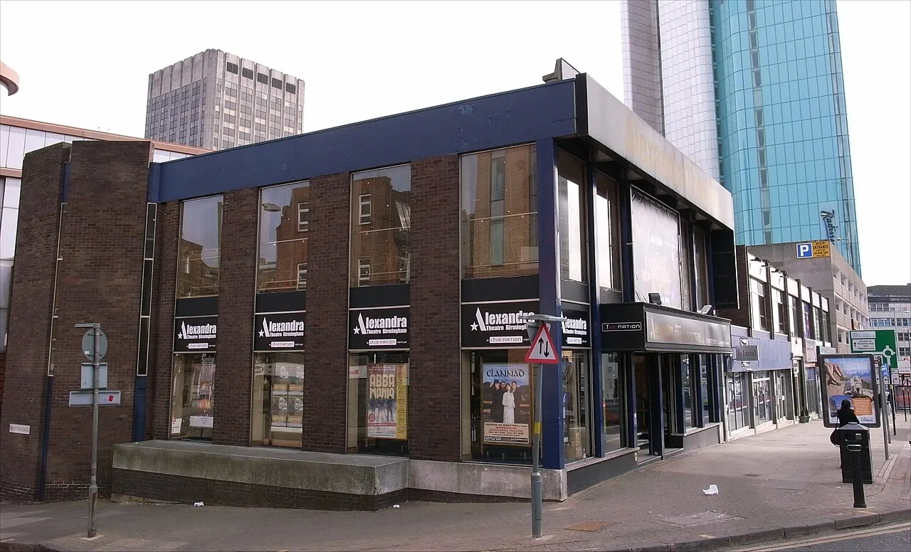
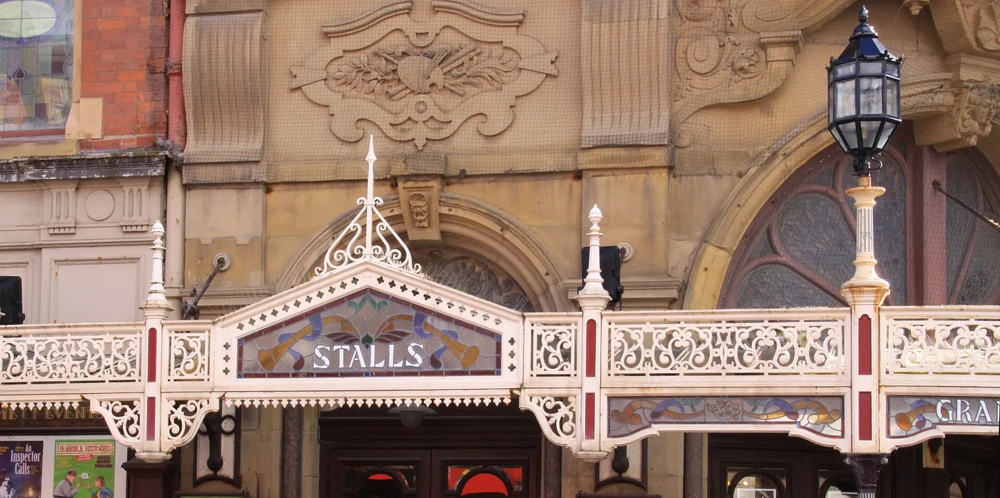

1. Footlights
1. Footlights 2. Fringe flyer
2. Fringe flyer 3. Libretto
3. Libretto 4. Tour diary
4. Tour diary 5. Editorial
5. EditorialOn the road
The tour, stop by stop
All 26 venues of the UK and Ireland tour of Pride and Prejudice* (*sort of), each with a photo, what is near it, how to get to the next stop, and places to stay. Or see the tour in six views.
- 1ChelmsfordChelmsford Theatrefrom 11 September 2026

2WorthingConnaught TheatreSeptember 2026- 3MoldTheatr ClwydSeptember to October 2026

4BuxtonBuxton Opera HouseOctober 2026 5LiverpoolLiverpool PlayhouseOctober 2026
5LiverpoolLiverpool PlayhouseOctober 2026 6BelfastGrand Opera HouseOctober 2026
6BelfastGrand Opera HouseOctober 2026
7SalisburySalisbury PlayhouseOctober 2026- 8NottinghamNottingham PlayhouseNovember 2026
- 9CambridgeCambridge Arts TheatreNovember 2026
- 10RichmondRichmond Theatre16 to 21 November 2026
- 11DarlingtonDarlington Hippodrome23 to 28 November 2026

12MalvernMalvern Festival Theatre30 November to 5 December 2026- 13PooleLighthouse26 to 30 January 2027

14LeicesterCurve1 to 6 February 2027- 15GuildfordYvonne Arnaud Theatre9 to 13 February 2027
- 16DublinBord Gáis Energy Theatre16 to 20 February 2027
- 17BradfordAlhambra Theatre23 to 27 February 2027
- 18SouthamptonMayflower Theatre3 to 6 March 2027

19OxfordOxford Playhouse8 to 13 March 2027
20TruroHall for Cornwall15 to 20 March 2027
21BirminghamAlexandra Theatre22 to 27 March 2027- 22EdinburghKing's Theatre30 March to 3 April 2027
- 23CardiffWales Millennium Centre13 to 17 April 2027
- 24GlasgowPavilion Theatre20 to 24 April 2027

25BlackpoolGrand Theatre26 April to 1 May 2027- 26HorshamThe Capitol4 to 8 May 2027
Photos from Wikimedia Commons, each credited on its venue's page. Places near each venue from OpenStreetMap contributors.